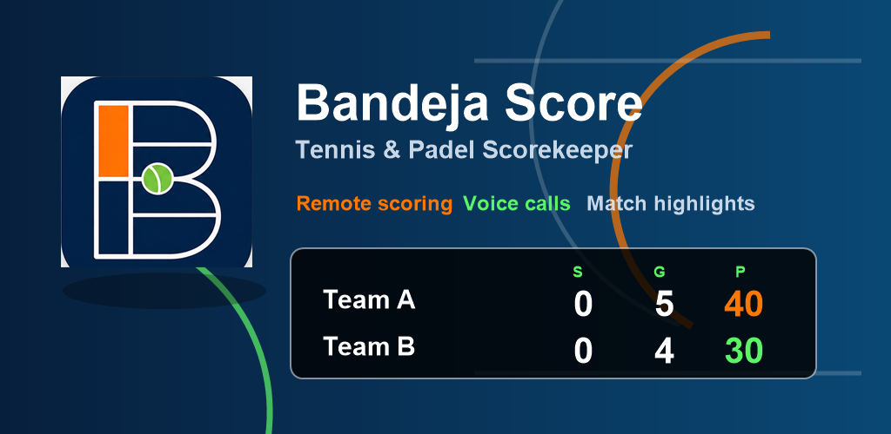
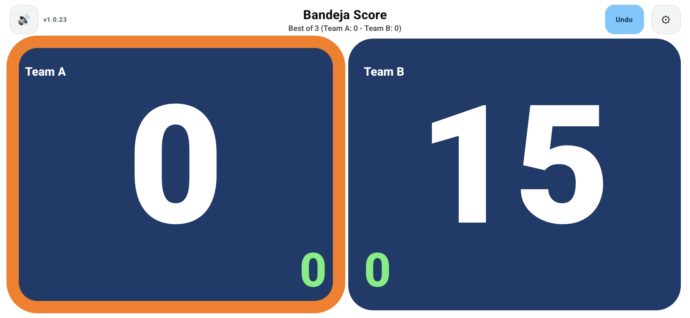
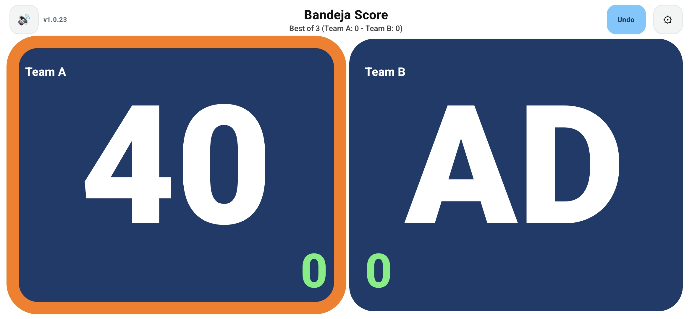
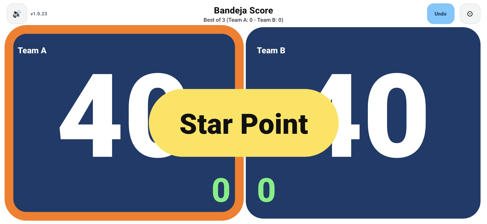
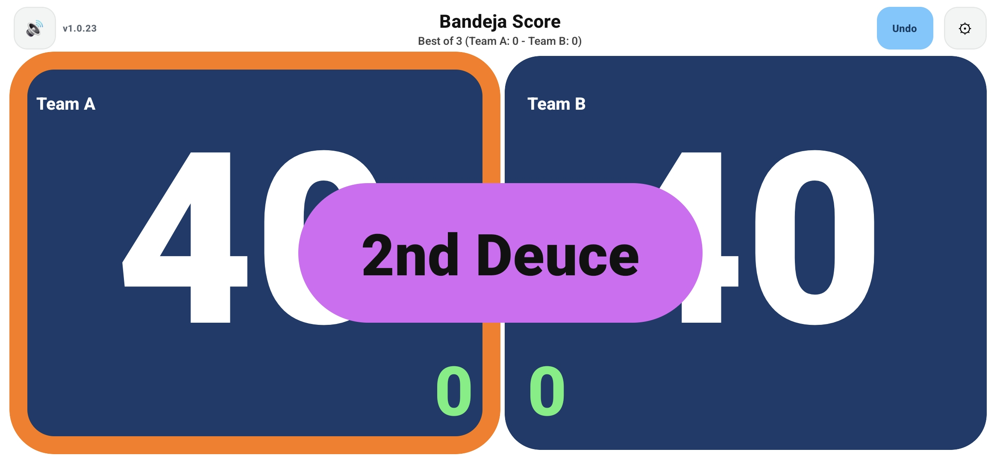
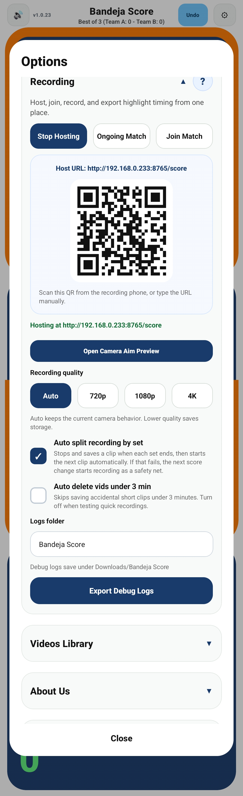

Tennis & padel scorekeeping
Big scores. Remote control. Instant highlights.
Bandeja Score turns your phone into a court-side scoreboard that is easy to read from far away, simple to control, and ready to record match highlights.
Coming to Google Play after closed testing.

Built for the court
Minimal during the match, powerful after it.
Readable from far away
Landscape mode uses oversized score boxes and high-contrast colors so players can see the match state at a glance.
Remote scoring
Map common Bluetooth camera remotes for point scoring and undo, so the phone can stay mounted off court.
Serve-aware scoring
Track serving side, games, sets, deuce states, advantage, second deuce, and star point without visual clutter.
Highlight workflow
Score changes create timing data that powers scoreboard rendering and automatic highlight clips after recording.
Two-phone recording
Host the score. Record the match. Keep the best points.
One phone hosts the live match score while a second phone joins by QR code and records the video. Bandeja Score keeps the score synced, overlays it onto recorded footage, and can generate shorter highlight reels.
1. Host match
2. Join by QR
3. Record and render
Screenshots
Designed around the horizontal scoreboard.




